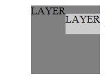
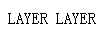
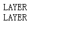
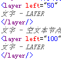
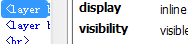
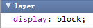

无
LAYER 元素不是 W3C 规范中的标准元素，它由 NetScape Navigator 4.0 引入，用于创建定位的块，相当于现在 CSS 中的绝对定位元素（position:absolute）。通过其
left、top 属性可以定义其定位的位置。
此元素为 NetScape 4.x 专有，其他浏览器甚至他版本的 NetScape 均不支持。
LAYER 元素已不被当前所有主流浏览器所支持，但是一些早期的页面或者脚本中仍会带有此元素，常见于早期页面，一般为试图使用其在 NetScape 浏览器中创建定位元素，通过诸如 "document.all"、 "document.layers" 判断浏览器是 IE 或是 NetScape，而在非 IE 浏览器中，可能会通过 document.write 向页面写入了 LAYER 元素，此时由于这些浏览器不支持 LAYER 元素而出现布局异常。
| NetScape 6.0 及以后其他所有浏览器 |
|---|
针对 LAYER 元素，IE 将其当做错误标签进行了修复处理，Firefox、Opera 将 LAYER 元素当做普通行内元素处理，Chrome Safari 将 LAYER 元素当做块级元素处理。
分析以下代码：
<layer left="50" width="100" height="100" bgcolor="gray">LAYER</layer> <layer left="100" top="20" width="30" height="30" bgcolor="#CCCCCC">LAYER</layer>
上面代码中创建了两个 LAYER 元素，设置了一些该元素的属性。
这段代码在不同浏览器中运行结果如下：
| NetScape 4.79 | IE6 IE7 IE8 | Firefox Opera NetScape 6 | Chrome Safari |
|---|---|---|---|
|  |  |  | |
|  |  |  | |
可见，NetScape 4.79 由于支持 LAYER 元素而将其解析出来，对于其他不支持此元素的主流浏览器：
放弃使用 LAYER 元素，改用 CSS 中的绝对定位样式 'position:absloute' 处理相关情况。
| 操作系统版本: | Windows 7 Ultimate build 7600 |
|---|---|
| 浏览器版本: |
IE6
IE7 IE8 Firefox 3.6.3 Chrome 6.0.422.0 dev Safari 4.0.5 Opera 10.53 NetScape Communicator 4.79 Netscape 6 |
| 测试页面: | |
| 本文更新时间: | 2010-07-15 |
layer NetScape